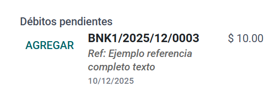

<div style="padding: 1.5rem 0rem !important; background-color: #ffffff !important;">

    <div class="container">
        <div class="row mt-5">
            <div class="col-lg-12 d-flex flex-column justify-content-center heading"
                style="text-align: center; padding: 1rem !important;">
                <h1 class="text-center" style="font-size: 4rem !important;">
                    <span></span><span>
                        Extensión del Widget de Pagos Pendientes
                    </span>
                </h1>
                <p class="text-center"
                    style="color: #212529 !important; font-size: 1.5rem !important; letter-spacing: 2px !important;">
                    Mejore su flujo de trabajo contable mostrando el Nombre del Asiento y la Referencia Completa directamente en el widget de Créditos/Débitos Pendientes.
                </p>
            </div>
        </div>

        <div class="row">
            <div class="col-lg-12 d-flex flex-column justify-content-center" style="padding: 2.5rem 1rem !important;">
                <h2 style="text-align: center;  color: #212529 !important;">Características Clave</h2>
                <hr
                    style="border: 3px solid #00438B !important; background-color: #00438B !important; width: 80px !important; margin-bottom: 2rem !important;" />

                <div class="d-flex m-0">
                    <div class="mr-3">
                        <h3
                            style="font-size: 2rem !important; font-weight: 800 !important; color: #ffffff !important; background-color: #00438B !important; padding: 1rem !important; width: 70px !important; height: 90px !important;">
                            01</h3>
                    </div>
                    <div>
                        <h3 style="font-size: 1.7rem !important; font-weight: 600 !important;">
                            Mostrar Nombre del Asiento: Muestra automáticamente el Número de Asiento (ej. BNK1/2025/001) en negrita, facilitando la identificación del documento de origen.
                        </h3>
                    </div>
                </div>

                <div class="d-flex m-0">
                    <div class="mr-3">
                        <h3
                            style="font-size: 2rem !important; font-weight: 800 !important; color: #ffffff !important; background-color: #00438B !important; padding: 1rem !important; width: 70px !important; height: 90px !important;">
                            02</h3>
                    </div>
                    <div>
                        <h3 style="font-size: 1.7rem !important; font-weight: 600 !important;">
                            Visibilidad Completa de Referencia: El diseño del widget se expande para mostrar la Referencia de Pago (Memo) completa sin cortes, ajustando el texto a múltiples líneas si es necesario.
                        </h3>
                    </div>
                </div>
            </div>
        </div>

        <div class="row">
            <div class="col-lg-12 d-flex flex-column justify-content-center" style="padding: 2.5rem 1rem !important;">
                <h2 style="text-align: center;  color: #212529 !important;">Cómo funciona</h2>
                <hr
                    style="border: 3px solid #00438B !important; background-color: #00438B !important; width: 80px !important; margin-bottom: 2rem !important;" />

                <div class="d-flex m-0">
                    <div>
                        <h3 style="font-size: 1.7rem !important; font-weight: 600 !important;">
                            Diseño y Visibilidad Mejorados
                        </h3>
                        <p style="font-size: 1.2rem; color: #555;">
                            No requiere configuración. Simplemente instale el módulo y el widget estándar de Odoo en Facturas de Cliente y Proveedor se actualizará automáticamente para mostrar información detallada.
                        </p>
                        <ul style="list-style-type: none; padding-left: 0; font-size: 1.2rem;">
                            <li style="margin-bottom: 10px;">
                                <i class="fa fa-check" style="color: #00438B;"></i>
                                <strong>Alineación Inteligente:</strong> El botón 'Agregar', la Información y el Monto están perfectamente alineados en la parte superior.
                            </li>
                            <li style="margin-bottom: 10px;">
                                <i class="fa fa-check" style="color: #00438B;"></i>
                                <strong>Datos Claros:</strong> El signo de moneda ($) y el monto se mantienen juntos, evitando confusiones visuales.
                            </li>
                        </ul>
                    </div>
                </div>

                
            </div>
        </div>

    </div>
</div>